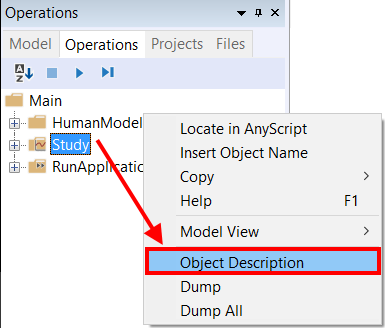

Lesson 4: Kinetics - Computing Forces¶
With the kinematic analysis in place, we are ready to compute forces and investigate ergonomic properties of the pedal arrangement. We shall presume that the pedal is loaded by a spring, the force of which the leg must overcome when stepping on the pedal. In this lesson, we will step by step define the spring force and look at its effect on the leg.
A force can be added to any kinematic measure using the AnyForce class. If the kinematic measure is a length (linear), then an AnyForce is a force, and if it is an angle (rotational), the AnyForce automatically becomes a moment. In the present case, we shall add the AnyForce to the kinematic measure of the pedal’s hinge (rotational). Let us initially study the measure. Run the “Kinematics” analysis again, open an AnyChart View, and browse your way through the tree to Main.Study.Output.Model.Environment.HingeJoint.Pos. You should see the following graph:

The analysis runs in time from zero to one second, and the pedal angle develops in this time from 100 degrees (1.74 rad) to 145 degrees (2.53 rad). Let us presume that the pedal is loaded by a linear spring that is slack at 0 degrees and increases its moment linearly with the rotation of the hinge. We might be wondering: What would be a comfortable spring stiffness for a pedal like that? Not having much experience with pedal design it might be difficult to imagine just how stiff the spring should be, and we could find ourselves developing a series of hardware prototypes with different springs and perhaps conducting subjective investigations with test subjects.
Include pedal spring force¶
Let us do it with AnyBody instead. We shall start out by declaring an AnyForce to play the role of the spring. Since this is not a part of the body, it is logical to place it in the Environment.any file. Here’s what to add:
AnyRevoluteJoint HingeJoint = {
Axis = z;
AnyFixedRefFrame &Ground = .GlobalRef;
AnyRefNode &Pedal = .Pedal.Hinge;
};
AnyForce Spring = {
AnyRevoluteJoint &Hinge = .HingeJoint;
F = -0.0\*.HingeJoint.Pos;
};
The AnyForce contains a reference to the HingeJoint. Since the degree of freedom in the HingeJoint is rotational, the force is as described above turned into a moment and applied to the hinge. The specification of F is the actual size of the load. We have made it proportional to the HingeJoint.Pos, which is the hinge angle, and we have initially set the spring stiffness to 0.0 (Nm/degree), to investigate the effect of having no spring before we start adding a spring force. Notice, by the way, the minus sign in front of spring constant. It has no importance now, but when we start adding non-zero stiffness, it will signify that the spring force goes against the angle, i.e. pushes back onto the foot.
Turn off default reaction forces¶
There are just a couple of things we need to do before we can do the InverseDynamicAnalysis operation and compute the forces: All the drivers we added in the previous lesson have motors built into them. This means that whatever force or moment is necessary to perform the movement will be provided by the drivers, and there will be nothing for the muscles to do. Motors in drivers are technically reaction forces, and they can be turned off inside the driver. Let us open the “JointsAndDrivers.any” file and do the following modifications:
AnyFolder Drivers =
{
AnyKinEqSimpleDriver PelvisThoraxDriver =
{
AnyKinMeasure& ref0 = ...HumanModel.BodyModel.Interface.Trunk.PelvisThoraxExtension;
AnyKinMeasure& ref1 = ...HumanModel.BodyModel.Interface.Trunk.PelvisThoraxLateralBending;
AnyKinMeasure& ref2 = ...HumanModel.BodyModel.Interface.Trunk.PelvisThoraxRotation;
DriverPos = pi/180*{0,0,0};
DriverVel = pi/180*{0,0,0};
Reaction.Type = {Off, Off, Off};
};
AnyKinEqSimpleDriver NeckJntDriver =
{
AnyKinMeasure& ref0 = ...HumanModel.BodyModel.Interface.Trunk.NeckJoint;
DriverPos = pi/180*{0};
DriverVel = pi/180*{0};
Reaction.Type = {Off};
};
AnyKinEqSimpleDriver AnkleDriver =
{
AnyKinMeasure& ref0 = ...HumanModel.BodyModel.Interface.Right.AnklePlantarFlexion;
AnyKinMeasure& ref1 = ...HumanModel.BodyModel.Interface.Right.SubTalarEversion;
DriverPos = pi/180*{0, 0};
DriverVel = pi/180*{0, 0};
Reaction.Type = {Off, Off};
};
AnyKinEqSimpleDriver KneeDriver =
{
AnyKinLinear lin =
{
AnyRefFrame& ref0 = Main.Model.Environment.GlobalRef;
AnyRefFrame& ref1 = Main.HumanModel.BodyModel.Right.Leg.Seg.Thigh.KneeJoint;
Ref = 0;
};
MeasureOrganizer = {2};
DriverPos = {0};
DriverVel = {0};
Reaction.Type = {Off};
};
AnyKinEqSimpleDriver PedalDriver =
{
AnyKinMeasure &ref0 = Main.Model.Environment.HingeJoint;
DriverPos = pi/180*{100};
DriverVel = pi/180*{45};
Reaction.Type = {Off};
};
};
And you should remove the additional reactions on the pelvis which are created by the Human template. The purpose of these additional reactions on the pelvis is to provide the necessary supports on the human pelvis to run the inverse dynamics if users may not define enough support forces on either both feet or pelvis. But because now this model has an AnyStdJoint which is defined between the Main.Model.Environment.GlobalRef.Hpoint and the pelvis segment, you don’t need to use these additional reactions on the pelvis anymore. You can remove them by commenting out the “Model\Reactions.any” in the main file like this:
...
AnyFolder Model = {
AnyFolder &HumanModel=.HumanModel.BodyModelWithDefaultDrivers;
#include "Model\Environment.any"
AnyFolder ModelEnvironmentConnection = {
#include "Model\JointsAndDrivers.any"
//#include "Model\Reactions.any"
};
};
...
Adding muscles¶
There is one more thing we have to do: The human model has no muscles at the moment. This can be corrected by a simple change of BM statements in the main file:
//-->BM statements
// Excluding the muscles in the trunk segments
#define BM_TRUNK_MUSCLES _MUSCLES_NONE_
// Excluding the left arm segments
#define BM_ARM_LEFT OFF
// Excluding the right arm segments
#define BM_ARM_RIGHT OFF
// Excluding the left leg segments
#define BM_LEG_LEFT OFF
// Using the right leg as 'TLEM' model
#define BM_LEG_RIGHT _LEG_MODEL_TLEM1_
// Excluding the muscles in the right leg segments
#define BM_LEG_MUSCLES_RIGHT _MUSCLES_NONE_
// Excluding the default drivers for the human model
#define BM_MANNEQUIN_DRIVER_DEFAULT OFF
//<--
Investigating results¶
Now, reload the model and run the RunApplication operation in the Model Tree. The model should look like this:

Notice that the muscle forces are illustrated by the bulging of the muscles. In the AnyChart view near the top of the tree, you can find the “Main.Study.Output.Model.HumanModel.BodyModel.SelectedOutput.Right.Leg.Muscles.Envelope”. It expresses the maximum muscle activation level among all the muscles in the right leg. Plotting this property in the AnyChart View gives you the following result:

Obviously holding the leg out in the air like that without the support of a pedal spring and holding up the weight of the pedal as well requires about slightly less than from about 9% to 6% of the leg’s strength.
Now, let us study the effect of spring stiffness. We initially try:
F = -10*.HingeJoint.Pos;
This produces the following envelope curve:

Obviously, the level is lower now. The envelope is at around 2%, so the spring really seems to help. This can make it easier for the operator to control the pedal and thereby enhance the operability.
The completed model is available here:
PedalModel.zip.
The AnyBody Modeling System is all about making this type of investigation easy. The mechanical model we have put together in four simple lessons has a complexity worthy of a Ph.D. project if you develop it bottom up. In AnyBody, this is a matter of a few hours of work when using the predefined models of the repository.